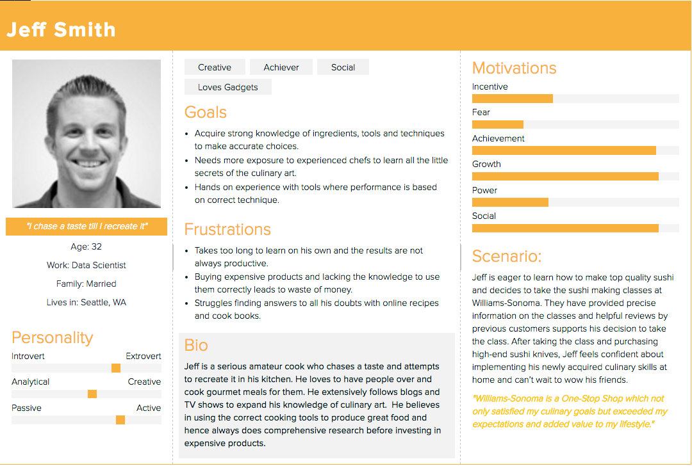
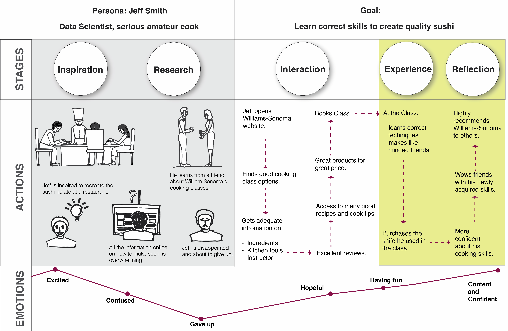

Williams-Sonoma | concept web Application
Project Overview:
2-week sprint
Individual project
Concept piece for Williams-Sonoma's cooking segment

The Challenge:
Williams-Sonoma is an upscale chain offering high-end cookware, house-label kitchen accessories and gourmet goods. They are aspiring to build a superior relationship with their customers by giving them an experience beyond kitchen products they purchase.
My Solution:
Develop a web-Application for Williams-Sonoma that allows users to:
- Explore new culinary skills and top-quality products.
- Search and book cooking classes in their city.
- Provide a social platform to communicate and share ideas and recipes with other cooks.
My Role:
This being an individual project, I
- Conducted domain, organizational, user research and heuristic evaluation.
- Created persona, user story, storyboard and various user and task flows.
- Built wireframes and tested them with participants
My Process
RESEARCH:
Organizational Research
I started with an organizational research on Williams-Sonoma, studied their founding values, their mission and corporate values that guide their actions and decisions.
I found
Their mission is to enhance the quality of their customers’ lives at home. From their people to their products, quality is their signature. Williams-Sonoma has a great range of top quality products and lot of useful information.
Unfortunately, their outdated website doesn’t allow users to find what they are looking for and they turn elsewhere.
Domain and User Research
For better understanding of the market, I prepared a competitive and comparative analysis of Williams-Sonoma and its competitors. I studied similar kitchen stores, other cooking classes and online retailers to understand the different opportunities available to the users in the existing market.
I also performed Neilsen heuristic evaluation and task analysis of Williams-Sonoma's current website and its competitors' websites to evaluate their usability.
User Interviews
I screened 20 people, out of which I interviewed 8 participants(on phone and in person) to study their behavioral patterns, their needs and desires and their frustrations with cooking and buying kitchen products.
Participants' Demographics
- Age group: 25-50
- Annual household income: 80k-300k (average 120k)
- Cooking experience: intermediate to advanced
Key Findings
- People are cooking more at home.
- They want to make interesting and healthy food.
- They want to understand the cooking process and techniques better.
- Their main source of information is online videos, TV shows and cook books.
- They would like more exposure to seasoned cooks and learn smart tips.
- More men are cooking and likely to buy high end kitchen tools (or gadgets ?!)
- They prefer shopping online because it’s convenient, has reliable customer reviews and good return policies.
- They find the staff in stores lack enough knowledge that will help them make wise choices.
- They would prefer physically seeing the product before buying it.
PLANNING
Who is it for?
The Affinity diagram helped me build my primary persona Jeff Smith.
Proto-persona
Jeff Smith is a serious amateur cook who loves to recreate food that inspires him. He is willing to spend money on big ticket items as long as their value is justified by utility.
Why build it?
Jeff loved the sushi he had at one of the best restaurants in Seattle. He wants to recreate that experience for his friends at home. After an extensive online research, he is overwhelmed with all the information he finds and cannot tell quality content from weaker ones. Jeff finds sushi making classes at Williams-Sonoma. They have provided precise information on the classes web page and helpful reviews by previous customers that supports his decision to take the class. After taking the class, Jeff feels confident about implementing his newly acquired culinary skills at home and wow his friends.
Williams-Sonoma not only satisfied his culinary goals but exceeded his expectations and added value to his lifestyle.
I created a User-Journey map aligning the persona's actions at different stages with their emotions to understand their pain-points and needs at various points.
DESIGN FRAMEWORK AND SKETCHES
Williams-Sonoma's current website makes it difficult for users to find cooking class information. It has too many options and menu bars on the home page confusing the user with the navigation. My goal was to bring clarity and discipline to the website's structure and user flows.
I used card sorting to start building the website structure which led to concept maps and eventually developed into a site map. The Site map helped to categorize different segments.
Modeling a user-flow helped me understand how the navigation of site worked and if it met the target users' needs and business goals. After working on my user flows, I started sketching different layouts on paper for content strategy and developed them into detailed wireframes using sketch. I used Invision to convert the wireframes into a prototype.

PROTOTYPE

USABILITY TESTING
First round of Usability Testing on wireframes. Total Participants: 4
- All participants felt the website was straightforward and had a clean design.
- The global navigation was obvious and easy to use.
- 3 participants successfully managed to book a class and find a particular product whereas 1 struggled with finding the BOOK button for classes.
- I also noticed participants hesitate when browsing classes by skill first or location.
Takeaways
Heuristic Evaluation: Early assessmemnt of the existing system in the process helps learning the design flaws and drawbacks that need to be adddressed thus giving a direction towards corrective measures.
Information Architecture: Organizing the information and structure of the website in a simple and effective manner thus making it useful and usable for the user. Site maps and Concept maps are useful techniques to build the information heirarchy and interrelation of content.